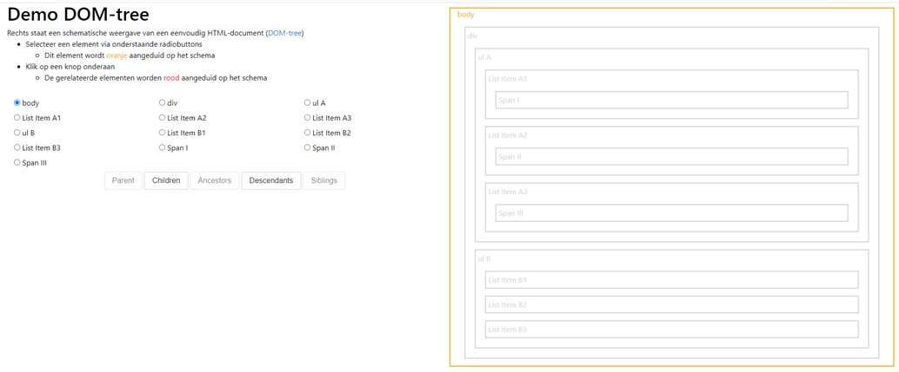
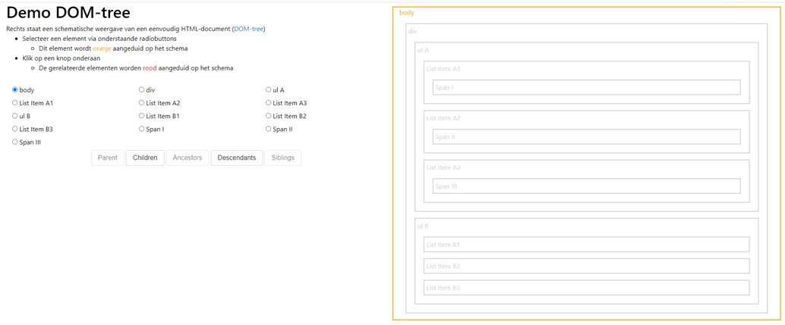
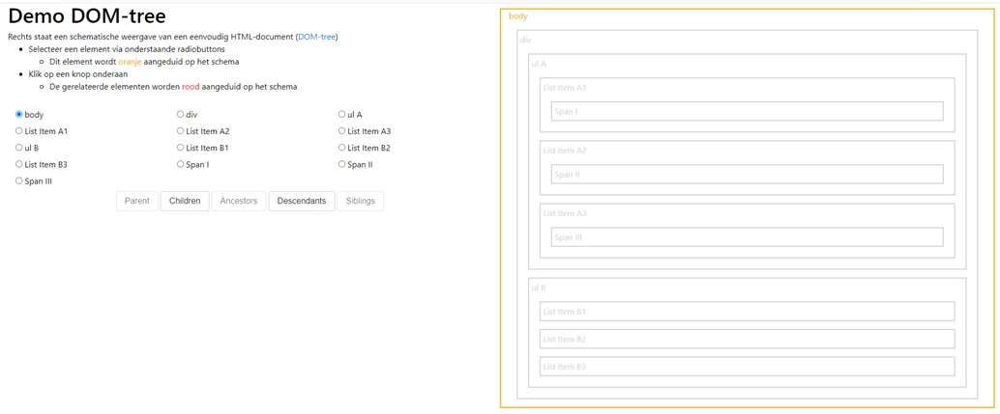

Het <p> element en het <h1> element.
Ancestors: <ul> → <body> → <HTML>
<h1> element, <p> element, <ul> element, alle 3 <li> elementen
1
Niet elk element heeft 1 of meerdere child elementen.
Bv, het <h1> element, <p> element, <li> element.
Elke vak dat samen in een vak (parent) zit en dat aangeduid is met dezelfde kleur zijn siblings van elkaar, het vak dat in een vak zit heeft een andere kleur en is de child van dat vak. Alle vakken die te uiteindelijk te vinden zijn in 1 vak zijn descendants van dat vak. Als een vak zich in een vak bevindt, dat zich op zijn beurt ook in een vak bevindt dan is de vak die al de vakken bijhoudt de ancestor. Snapt u? :P
